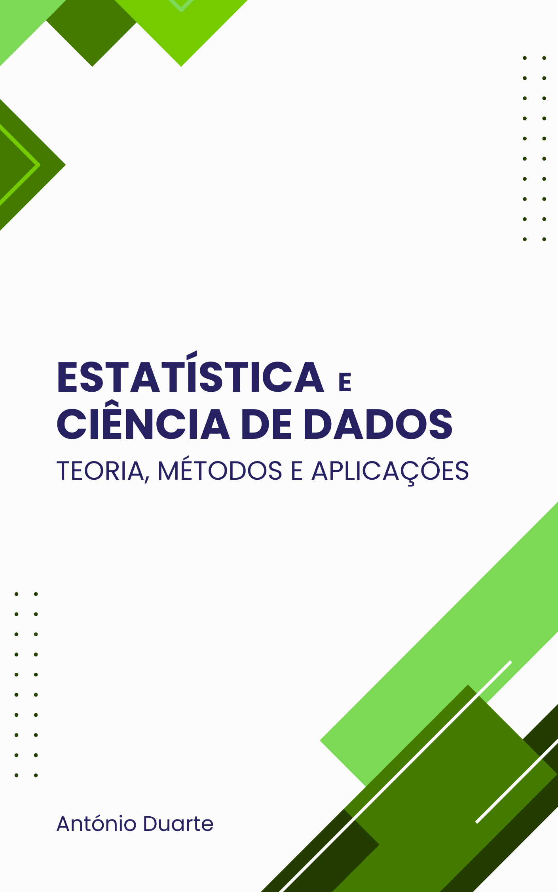

Estatística e Ciência de Dados
Teoria, Métodos e Aplicações
![]()
Nota Prévia

Num momento em que surgem modelos de IA sofisticados e ferramentas de análise de dados poderosas, um novo texto sobre Estatística, não só se justifica, como poderá ser um ativo valioso para navegar um mundo orientado pelos dados. À medida que aqueles modelos estão cada vez mais integrados na tomada de decisão, a literacia estatística é a chave para a correta interpretação de resultados e para a identificação de vieses.
É neste contexto que surge este trabalho, um projeto idealizado ao longo do tempo e agora concretizado em formato de livro online e open source, que tem como objetivo primeiro apoiar a atividade letiva do autor na Escola Superior de Tecnologia e Gestão do Instituto Politécnico de Bragança.
O livro reúne um conjunto de textos sobre conceitos e métodos de nível introdutório a intermédio sobre Estatística e Ciência de Dados. Será dado algum ênfase à utilização do computador, tendo sido escolhida a plataforma R (R Core Team, 2024) para implementar a análise estatística.
O livro cobre tópicos como a recolha e preparação de dados, teoria da probabilidade, inferência estatística básica (intervalos de confiança, testes de hipóteses), estatística não paramétrica e modelos de análise de variância e de regressão.
Pretende-se que a linguagem do livro seja acessível sem perder o rigor. A formalização matemática dos conceitos teóricos será reduzida ao indispensável e, sempre que necessário, o leitor é remetido para fontes mais específicas.
Naturalmente, muitos dos materiais foram desenvolvidos ao longo dos anos e poderão compreender contributos de inúmeros colegas. Existirão instâncias em que, por serem há muito utilizados, já não é possível identificar com rigor a autoria. Em outros casos terão sido inspirados em livros ou de fontes online cujo rasto se perdeu. Foram feitos todos os esforços para atribuir o devido crédito a essas contribuições. No entanto, caso identifique alguma situação que deva ser corrigida, não hesite em entrar em contacto com o autor.
Optou-se por disponibilizar este livro de forma aberta sob a licença CC BY-NC-ND 4.0. Pode ser utilizado o GitHub para propor alterações e correções ou apenas para reportar uma gralha ou iniciar uma discussão.